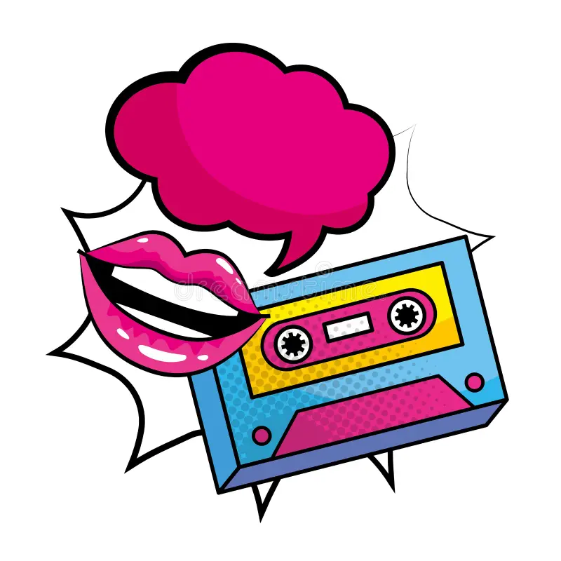
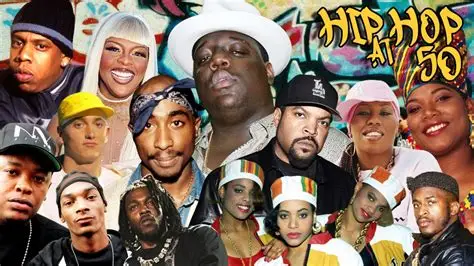
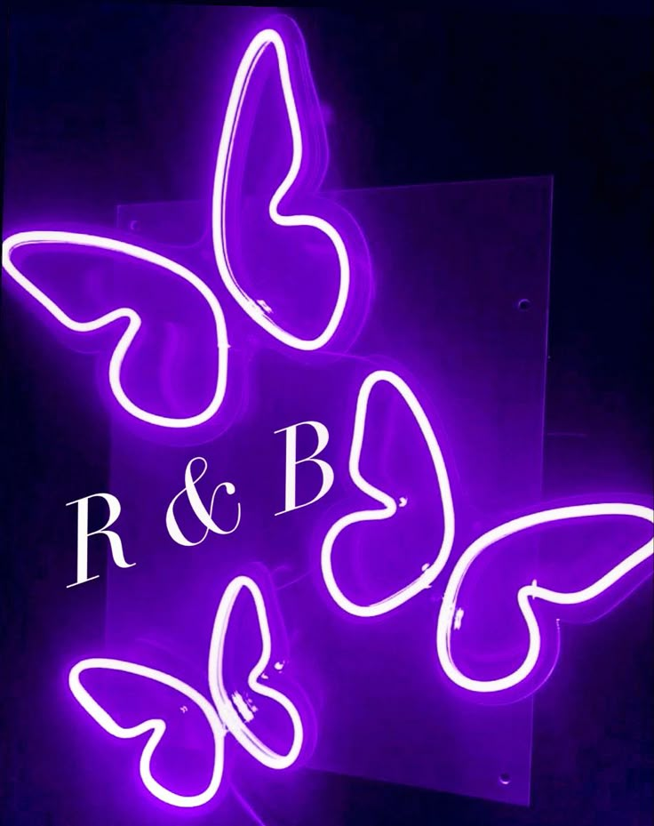
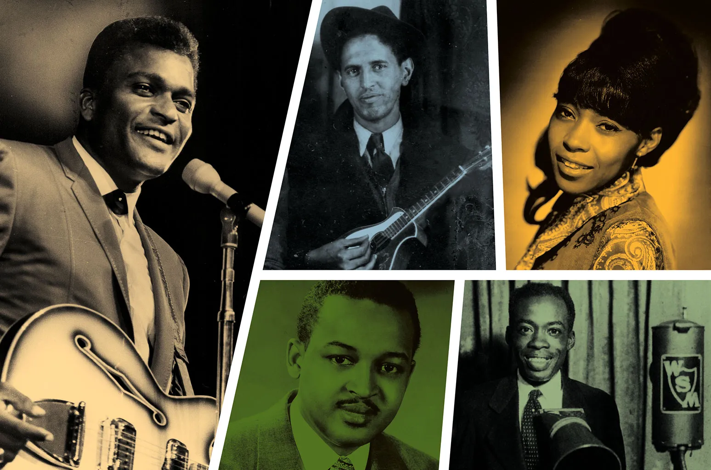
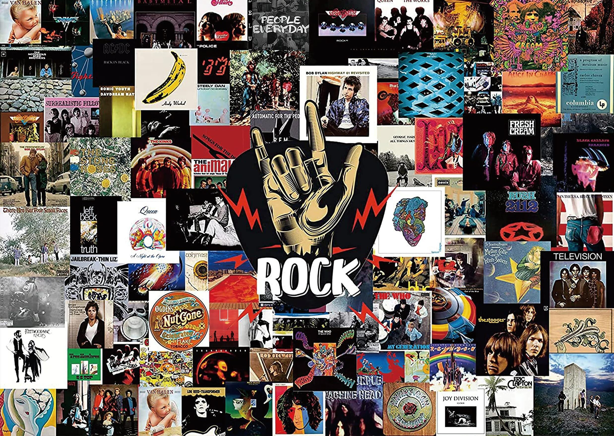
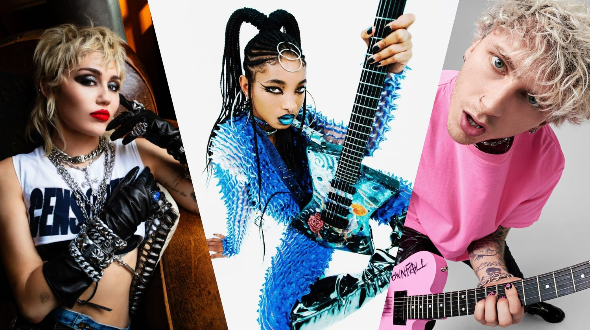
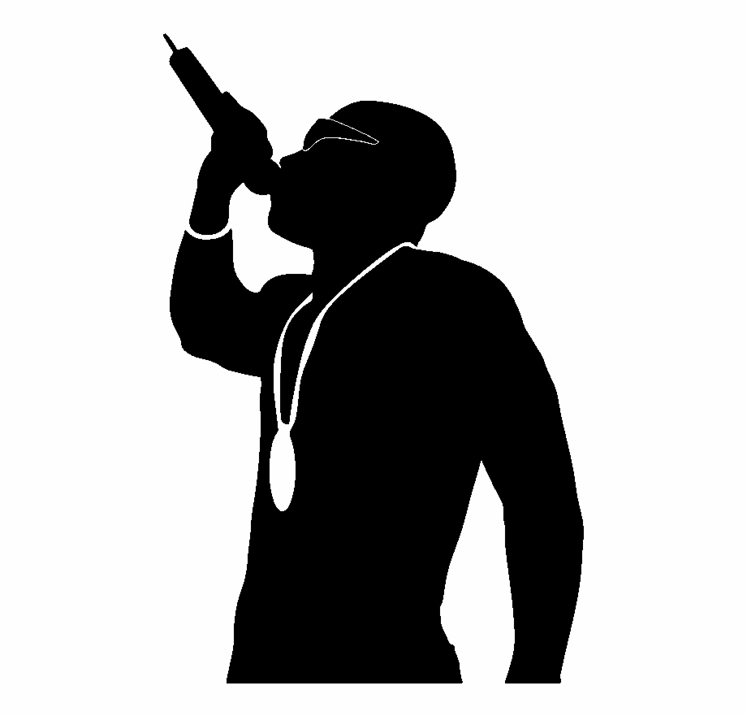
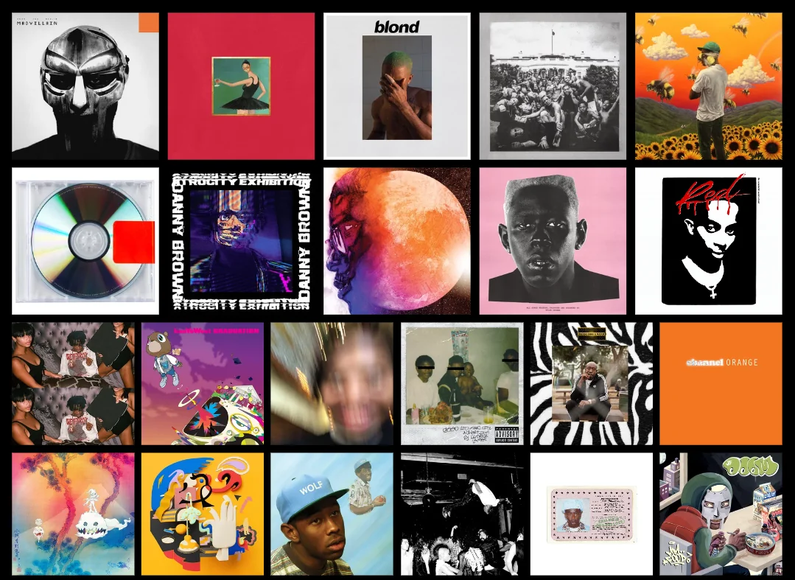
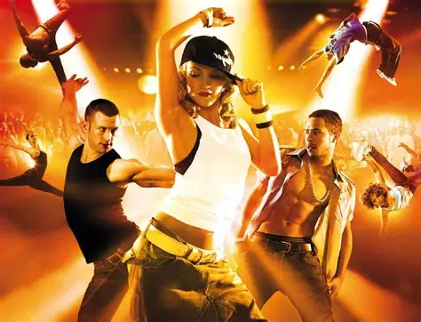

genres
Pop music, short for “popular music,” started becoming its own genre in the 1950s and 1960s. It grew out of rock and roll but focused on catchy melodies, easy-to-follow lyrics, and songs made for a wide audience. Icons like The Beatles and Michael Jackson shaped what we think of as pop. Over time, pop blended with other genres like dance, hip-hop, and electronic music. Today, artists like Taylor Swift, Ariana Grande, and Billie Eilish keep pushing pop forward, but the heart of it is still making music that connects with as many people as possible.
| Song |
Artist |
| The Way I Loved You |
Taylor Swift |
| Siren Sounds |
Tate McRae |
| Single Ladies |
Beyonce |
Pop

Hip-hop began in the Bronx, New York City, during the 1970s. It started as a cultural movement with four main elements: rapping, DJing, breakdancing, and graffiti art. Early hip-hop was about storytelling and representing life in underserved communities. By the 1980s and 1990s, artists like Run-D.M.C., Tupac, and The Notorious B.I.G. helped hip-hop grow worldwide. Today, it’s one of the most popular genres, with artists like Kendrick Lamar, Drake, and Nicki Minaj leading the way. Hip-hop continues to evolve, mixing with pop, trap, and R&B but still rooted in expression and rhythm.
| Song |
Artist |
| Yeah! |
Usher |
| On & On |
Erykah Badu |
| Cranes in the Sky |
Solange |
Hip Hop

R&B started in the 1940s as a mix of jazz, gospel, and blues. In the beginning, it was mostly soulful singing with strong rhythms that influenced early rock and roll. In the 1960s and 1970s, artists like Stevie Wonder and Aretha Franklin brought R&B into the spotlight. By the 1990s, R&B blended with hip-hop, creating smooth, emotional music with a modern twist—think Usher, Aaliyah, and TLC. Today’s R&B artists like SZA, Frank Ocean, and The Weeknd continue the tradition of soulful singing but mix in electronic and pop sounds too.
| Song |
Artist |
| Climax |
Usher |
| Let Me Love You |
Mario |
| Need U Bad |
Jazmine Sullivan |
R&B

Country music began in the southern United States during the 1920s, but its roots stretch back much further. It grew out of folk traditions brought by European immigrants and also from the music of enslaved African people. Instruments like the banjo, which became central to early country, came from Africa through slavery. Country’s storytelling style was influenced by both the ballads of European settlers and the rhythms, call-and-response, and spirituals sung by enslaved people. In the early days, country was played on fiddles, banjos, and acoustic guitars, often sharing stories of rural life and hardship. By the 1950s, stars like Johnny Cash and Patsy Cline helped bring country into the mainstream. Later, artists like Garth Brooks and Shania Twain gave it a pop twist and reached bigger audiences. Today, country has a wide range of sounds—from traditional artists like Chris Stapleton to pop-country stars like Kacey Musgraves and Morgan Wallen. At its core, country is about storytelling, but its history is deeply tied to the blending of cultures and painful histories of the American South.
| Song |
Artist |
| Cruise |
Florida-Georgia Line Ft. Nelly |
| Kiss An Angel Good Mornin' |
Charley Pride |
| Wanted |
Hunter Hayes |
Country

Alternative music, often called “alt,” started in the 1980s as a response to mainstream rock and pop. It was a way for bands to make music that felt different, experimental, or more authentic. In the 1990s, alt rock exploded with bands like Nirvana, Radiohead, and Red Hot Chili Peppers. The genre blends rock, punk, indie, and sometimes electronic influences. Today, “alternative” is broad—it can mean indie pop (like Clairo), alt-rock (like Arctic Monkeys), or experimental sounds (like Tame Impala). What ties it together is that it’s music that doesn’t always follow the mainstream formula.
| Song |
Artist |
| Day 'N Nite |
Kid Cudi |
| Telegraph Ave |
Childish Gambino |
| Ant Pile |
Dominic Fike |
Alternative
Rock grew in the 1950s as a mix of blues, R&B, and country. It was heavily influenced by African American music traditions, especially rhythm and blues, which gave it its raw energy and groove. Early stars like Chuck Berry and Little Richard paved the way, followed by bands like The Beatles, The Rolling Stones, and Led Zeppelin who made rock a global force. By the 1970s and 1980s, rock split into subgenres like punk, metal, and alternative. It became a symbol of rebellion, youth culture, and freedom. Today, while not as dominant in the charts, rock still lives strong through bands old and new, shaping how we think about live performance and guitar-driven sound.
| Song |
Artist |
| I Love Rock 'n' Roll |
Joan Jett and the Blackhearts |
| Don't Stop Believin' |
Journey |
| November Rain |
Guns N' Roses |
Rock

Pop rock is a mix of catchy pop melodies with the energy of rock music. It first started gaining popularity in the 1960s, when bands like The Beatles and The Beach Boys blended rock’s guitars with pop’s sing-along hooks. In the 1970s and 1980s, artists like Elton John, Fleetwood Mac, and Billy Joel kept the style alive with big hits. The 1990s and 2000s brought pop rock back in a fresh way with bands like Maroon 5, Coldplay, and Paramore. The genre is often lighter and more radio-friendly than harder rock, but still has the guitars and drums that make it feel powerful. Today, pop rock continues to thrive with artists like Olivia Rodrigo and Harry Styles, who mix modern pop sounds with rock influence. At its heart, pop rock is about making music that feels energetic and emotional while still being easy for everyone to enjoy.
| Song |
Artist |
| The Scientist |
Coldplay |
| Complicated |
Avril Lavigne |
| The Man Who Can't Be Moved |
The Script |
Pop Rock

Rap is a core part of hip-hop culture, which began in the Bronx, New York City, in the 1970s. It grew from African and Caribbean traditions of spoken word, storytelling, and rhythm. Early rappers used rhymes over beats created by DJs to tell stories about real life, struggles, and community. In the 1980s and 1990s, rap exploded with artists like Run-D.M.C., Tupac, and Nas, turning it into a global movement. Rap evolved into different styles—gangsta rap, conscious rap, trap, drill, and more. Today, it’s one of the most popular forms of music worldwide, shaping culture, fashion, and politics. At its core, rap is about expression, wordplay, and rhythm, giving a voice to people and communities often left unheard.
| Song |
Artist |
| Come Thru |
Drake |
| Starboy |
The Weeknd Ft. Daft Punk |
| Mona Lisa |
Lil Wayne Ft. Kendrick Lamar |
Rap

Alternative rap is a style of hip-hop that mixes rap with sounds from outside traditional hip-hop, like rock, jazz, punk, or electronic music. It started in the late 1980s and early 1990s with groups like A Tribe Called Quest, De La Soul, and The Roots, who used creative beats and thoughtful lyrics instead of following the mainstream style. In the 2000s, artists like OutKast, Kanye West, and Kid Cudi pushed the genre further by blending rap with funk, pop, and experimental sounds. Alternative rap often focuses on personal stories, emotions, and social issues, rather than just bragging or party themes. It gave space for artists who didn’t fit into the “typical rapper” image to find their voice. In the 2010s and beyond, artists like Tyler, The Creator, Childish Gambino, and Brockhampton made alt rap even more popular with younger audiences. Today, alt rap is known for being experimental, creative, and open to mixing all kinds of genres.
| Song |
Artist |
| WHY CAN'T WE BE FRIENDS |
Tyler the Creator |
| Spaceship |
Kanye |
| Forbidden Fruit |
J. Cole |
Alternative Rap

Dance music is all about rhythm and movement, and it has roots in cultures all over the world. In the U.S., modern dance music grew in the 1970s with disco, which gave people a beat to escape and celebrate to. The 1980s and 1990s saw the rise of electronic dance music (EDM), house, and techno, especially in clubs and underground scenes. Many of these styles came from Black, Latino, and LGBTQ+ communities, who used dance floors as spaces of freedom. Over time, DJs became central figures, mixing beats and creating nonstop energy. Today, artists like Calvin Harris, David Guetta, and Skrillex keep dance music mainstream, while underground scenes continue pushing it forward. At its heart, dance music is about connection, energy, and celebration.
| Song |
Artist |
| Party 4 U |
Charli XCX |
| Born This Way |
Lady Gaga |
| California Gurls |
Katy Perry |
Dance
